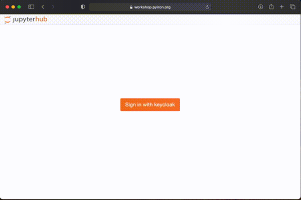

Potentials Workshop¶
The workshop - workflows for atomistic simulation (10 - 12 March 2021) is organized by the Interdisciplinary Centre for Advanced Materials Simulation (ICAMS) and the Max-Planck-Institut für Eisenforschung (MPIE) in collaboration with the Technische Universität Darmstadt and the Georg-August-Universität Göttingen.
Cloud environment¶
During the workshop we use the pyiron workshop infrastructure - workshop.pyiron.org.

Alternatively you can use

Local installation¶
Besides the cloud infrastructure used during the workshop, the same notebooks can also be executed on any Linux workstation. To setup the conda environment for the workshop, the environment file is loaded:
conda env update --file binder/environment.yml
Following the installation of the conda environment, NGLview for jupyter lab is configured:
jupyter nbextension install nglview --py --sys-prefix
jupyter nbextension enable nglview --py --sys-prefix
jupyter labextension install @jupyter-widgets/jupyterlab-manager --no-build
jupyter labextension install nglview-js-widgets
jupyter labextension install @jupyterlab/toc
Content of the Workshop¶
Day 1¶
The scope of the first day is to become familiar with pyiron. We start with LAMMPS as molecular dynamics code to calculate moelcular dynamics trajectories, followed by the introduction of the pyiron tables object, S/PHI/nX as opensource DFT code and Master jobs like the Murnaghan job to calculate the energy volume curve, the calculation of elastic constants and finally the calculation of free energies with phonopy.
Day 2¶
The scope of the second day is to learn about the fitting of interatomic potentials, with a primary focus on atomicrex, the atomic cluster expansion and the neuronal network potentials.
Day 3¶
Finally on the third day we calculate the material properties defined on the first day with the interatomic potentials fitted on the second day and validate those with the results of other interatomic potentials available at atomistictools.org.